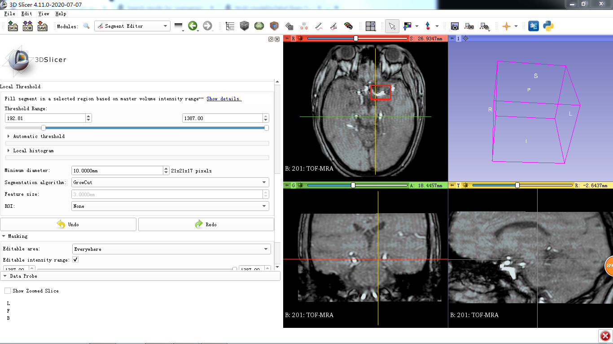
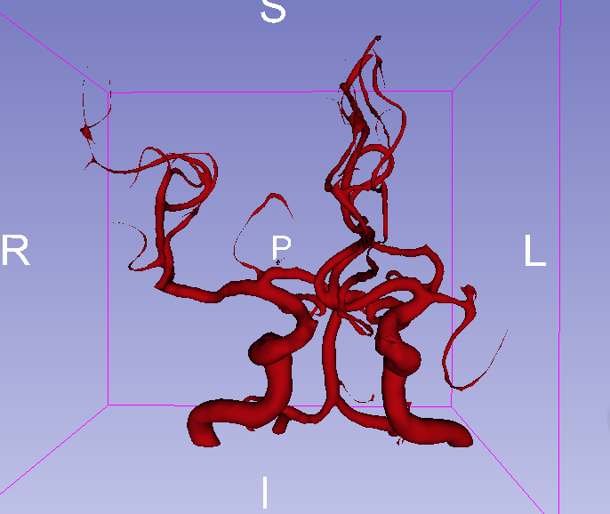
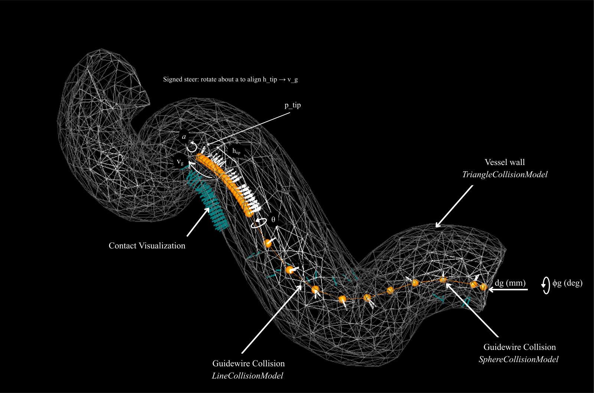

Anatomy-Specific Guidewire Personalization
for Neuroendovascular Navigation
Endovascular tools are still designed for a generic patient — yet the internal carotid artery varies dramatically from person to person. This thesis builds a full pipeline: segment real patient anatomy from MRI data, simulate guidewire physics inside those geometries, optimize device parameters to each individual, and validate it all on physical hardware.
Research Pipeline
100-patient TOF-MRA. 3D Slicer segmentation, VMTK centerlines, tortuosity classification.
Custom physics simulation built in SOFA + BeamAdapter for catheter/guidewire mechanics.
Genetic algorithm tunes tip geometry per patient. Fitness: navigation success + contact forces.
Custom benchtop testbed. Fluoroscopic + camera tracking. Sim-to-real verification.
The Dataset I Curated
100 Patients. Real Anatomy. Built From Scratch.
There was no off-the-shelf dataset for this problem, so the first step was building one. Starting from open-source TOF-MRA (Time-of-Flight MR Angiography) scans, each patient's vascular anatomy had to be manually worked through — loading volumes into 3D Slicer, adjusting thresholds, correcting segmentation boundaries, and isolating the internal carotid artery from surrounding structures.
The ICA is notoriously difficult to segment cleanly — it twists, bifurcates, and varies in caliber across patients. Each case required careful review to produce a clean, usable geometry rather than just running an automated pipeline and hoping for the best.
From there, VMTK was used to extract centerlines and generate watertight surface meshes suitable for simulation — converting the raw segmentations into 3D models the SOFA simulator could actually load and interact with.

Classifying Anatomies by Tortuosity
Once segmented, each ICA was characterized by its tortuosity index and curvature severity — quantifying how twisted and challenging each anatomy actually is. This wasn't just a labeling exercise; the classification directly drives which patients receive which optimization targets.
The result is a 100-patient benchmark spanning the full spectrum of ICA geometry, from relatively straight vessels to highly tortuous anatomies where standard devices routinely fail. This kind of systematic anatomy-specific dataset didn't exist before for this specific application.


Building the Simulation

SOFA Framework — Built From Scratch
The simulation environment was built entirely from the ground up inside the SOFA Framework using the BeamAdapter plugin. This involved setting up the full physics stack: beam mechanics for the guidewire's flexible body, contact and collision handling between the device and vessel wall, and tissue deformation to approximate real vascular compliance.
Each patient mesh from the dataset was loaded as the simulation environment, with the guidewire navigated through the vessel under realistic mechanical constraints. This gives a physics-grounded prediction of how a given device configuration will behave inside that specific patient's anatomy — before ever touching physical hardware.

Optimization & Validation
A genetic algorithm tunes guidewire tip shape parameters — length, diameter, stiffness — per patient anatomy. The fitness function balances navigation success rate and contact forces, evolving the device geometry across generations toward the configuration best suited for each individual ICA.
Optimized configurations are tested on a custom benchtop robotic actuator with anatomical phantoms. Fluoroscopic imaging and camera tracking provide ground truth measurements of tip deflection and navigation success, confirming that simulation predictions hold up in reality.